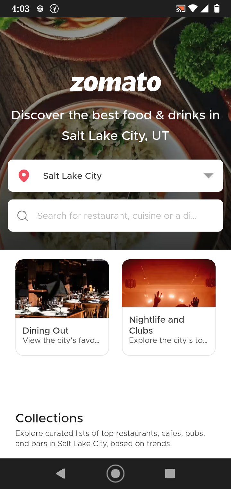

Zomato
Zomato.com Hick's law states that the more options are available to a person, the longer it will take for him or her to make a decision about which option is best. with Zomato it is designed to give the user simple and directive options so that the time to debate between choices is minimized.